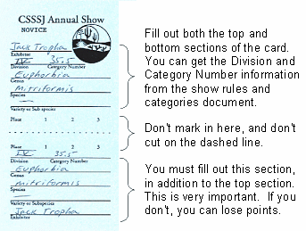
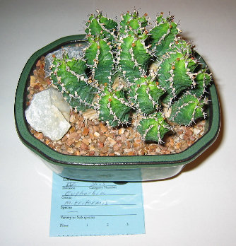

How to Enter Plants in the Show
Entering plants into the CSSSJ show is easy. The following explains how.
Choose the class that you would like to exhibit your plants in.
Most people reading this will likely be entering plants in the Novice class, but you can compete in one of the following three classes.
The classes are lower limits - anyone can move up.
Choose the plants you would like to enter.
You can enter into the show any plant that has been in your possession for six or more months. Plants that are entered in the show should be clean, free of scarring, bugs, spider webs, and pesticide odors. The judges cannot rotate a plant on the table to look at it from all sides, so actually, if you have a plant that has a good side and a not-so-good side, you can still enter it.
Though a fancy pot is not necessary, the plant should be nicely potted and the pot should be clean.
Obtain a copy of the show rules and categories, and some entry cards.
Read and understand the show rules.
The latest version of the show rules and categories document can be obtained at the meetings preceding the show, by clicking here, or at the show site on the Friday night before the show opens. Entry cards can be obtained at the meetings preceding the show, or at the show site on the Friday night before the show opens (entry cards are not available online).
After reading the rules, determine the divisions and categories in which you will be entering your plants. This information can be determined from the show rules and categories document. For example, suppose you have a nice Euphorbia mitriformis that you would like to enter. Turn to the genus cross-reference on page 7 of the show rules and categories document, and find that the categories for Euphorbia are 35.1 through 35.6. Find those categories in the categories listings which are on pages 3 through 6 of the document (the Euphorbia categories happen to be on page 5). Looking over the various Euphorbia categories, you decide your Euphorbia mitriformis is shrubby, rather than medusiod, caudiciform, globose, columnar, or milliform, so you decide to enter it in category 35.5, "Euphorbia - shrubs."
Fill out the entry cards.
There are enough entry cards per sheet of paper for six plants. Fill out one entry card per plant. The following shows how the card might be filled out for our Euphorbia mitriformis:

After filling out the cards, fold them on the dashed line. Do not cut them on the dashed line.
Bring your plants to the show between 5:00 p.m. and 7:30 p.m. on Friday evening.
Place them out on the show tables in the appropriate categories so that their best side faces out. Place the folded entry tags under the pots so that your name (not the plant's name) is concealed, as in this picture:

That's all there is to it! You do not even have to attend the show. You'll just have to come by and pick up your plants and (possibly!) your awards on Sunday evening. Remember, as stated in the rules, you cannot remove your plants from the show area until after 4:00 pm Sunday evening.
Good Luck!